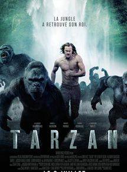
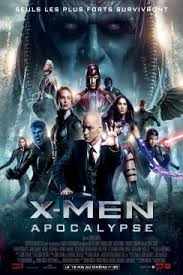
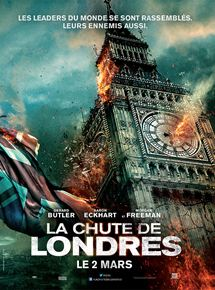

| Titre | Synopsis | Min |
| Tarazan | ne relecture du mythe Tarzan. Après avoir grandi dans la jungle africaine, Tarzan a renoué avec ses origines aristocratiques, répondant désormais au nom de John Clayton, Lord Greystoke. Il mène une vie paisible auprès de son épouse Jane jusqu'au jour où il est convié au Congo en tant qu'émissaire du Commerce. Mais il est loin de se douter du piège qui l'attend. Car le redoutable belge Leon Rom est bien décidé à l'utiliser pour assouvir sa soif de vengeance et sa cupidité… |  |
| X-men | Depuis les origines de la civilisation, Apocalypse, le tout premier mutant, a absorbé de nombreux pouvoirs, devenant à la fois immortel et invincible, adoré comme un dieu. Se réveillant après un sommeil de plusieurs milliers d'années et désillusionné par le monde qu'il découvre, il réunit de puissants mutants dont Magneto pour nettoyer l'humanité et régner sur un nouvel ordre. Raven et Professeur X vont joindre leurs forces pour affronter leur plus dangereux ennemi et sauver l'humanité d'une destruction totale. |  |
| Londeres | Les plus grands leaders du monde occidental sont attendus à Londres aux funérailles du Premier ministre britannique, mort dans des circonstances plus que douteuses. Mais ce qui avait commencé comme l’évènement le plus sécurisé de la planète tourne rapidement au désastre. Cible d’un complot terroriste, la capitale anglaise est mise à feu et à sang et la plupart des chefs d’état faits prisonniers. Seuls ont pu s’échapper le président américain et l’agent secret Mike Banning, qui vont devoir à la fois combattre pour survivre et mettre fin aux agissements des terroristes. |  |